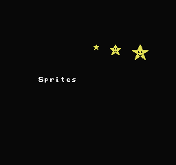

06、精灵
什么是精灵？精灵是一种可以在整个屏幕上自由移动的贴图。精灵通常是8×8，但它们也可以是8×16（稍微复杂一些）。我将使用8×8的例子。精灵由PPU的OAM部分中的256个字节定义。有64个精灵。这是每个精灵4个字节。
但8×8是如此之小。我们如何让马里奥如此之大？我们将多个精灵组合在一起在屏幕上移动。这被称为metasprite。
往下看。小马里奥由4个精灵组成，大马里奥由8个精灵组成。

NES上的精灵有一个2B的限制。每条水平线8个精灵。而且就这么多了。这就完了么，不是，你在多个精灵就会消失。
OAM中的精灵的顺序决定了哪个将显示哪个，哪个将消失。OAM中的第一个（0号精灵）有最高优先级。它将显示在其他人面前，首先计入8精灵的限制。
你可能看到过有些游戏里精灵会闪烁。为了避免精灵消失，通常在OAM中调整精灵的顺序，让精灵交替显示和消息，从而产生闪烁。不过闪烁总比看不到要好。
另一个奇怪的是，精灵总是向下移动1个像素。如果你把精灵放在Y = 0，精灵的顶部将不会出现，直到下一行。看看马里奥的脚，你会发现他在地板上有1个像素。这对于平台游戏来说可能看起来不错，自上而下的游戏可能看起来更好，精灵与背景对齐。我们可以通过把背景向下移动1个像素来轻松完成此操作。
精灵可以在屏幕上的任何地方。但是，它们不能很好地从屏幕左侧平滑移动。有一个选项（PPU Mask 2001位xxxx x11x），如果为零，则关闭屏幕的左侧8个像素，然后您可以平滑地移出屏幕的左侧。
任何精灵的Y坐标 >=$ef 都会被视为出了屏幕。当你调用函数oam_clear() 或oam_hide_rest() 时，它会将精灵Y置于$ff，也就是屏幕下方。精灵不会缠绕(Sprites don’t wrap around)。
1个精灵需要4个字节，Y, tile #, attributes, X
x,y坐标好理解
下面是描述 attributes 属性的功能
76543210
||||||||
||||||++ -精灵调色板（4到7）
|||+++ ---未实现
||+ ------优先级（0：在背景前; 1：在背景后面）
|+ -------水平翻转精灵
+ --------垂直翻转精灵
那么我们如何制作精灵呢？就像写入后台一样，你只能在v-blank期间写入精灵，这是由nmi代码中的neslib处理的。执行此操作的标准方法是预留256字节缓冲区，与xx00完全对齐。上面的图片是$700，但是neslib通常使用$200（在crt0.s中定义为OAM_BUF）。nmi代码将执行快速OAM DMA并将所有精灵从缓冲区复制到OAM。
由于我们使用了缓冲区，您可以随时写入缓冲区。我更倾向于每帧都清除缓冲区，然后每帧开始的时候重建它。
oam_clear(); 清除精灵缓冲区。
sprid = 0; 将缓冲区的索引设置为零。
sprid (sprite id #) 加载精灵缓存的方法
sprid = oam_spr(x,y,tile,attribute,old sprid);
将1个精灵放入缓冲区。返回sprid+4。这样做可以跟踪填充缓冲区的使用位置。
sprid = oam_meta_spr();
将1个metasprite放入缓冲区。返回sprid+(4x#sprites)。
当我制作图形文件时，我将精灵图形放在下半部分。我们必须记得告诉neslib我们想要使用后半部分精灵......
bank_spr(1);
记得定义背景和精灵的调色板。
我如何制作metasprite？
NES Screen Tool有一个制作metasprites的工具。我发现它有点难用。有时我只是从相同大小的metasprite复制并粘贴一个定义（并更改tile #s）。
但是，如果你使用NES Screen Tool，你可以“将单个metasprite作为C放入剪贴板”，然后将其粘贴到代码中。然后你可以将它传递给oam_meta_spr() 函数。
oam_meta_spr(x,y,old sprid, * data).
neslib（和NES Screen Tool）使用的精灵定义不正常。它是x，y，tile，attribute，而不是NES的实际字节顺序（y，tile，attribute，x）。记住这一点，如果你想手动重新输入，就像我有时那样。
如果你想让metasprite改变方向（并水平翻转），那么你应该制作2个独立的metasprites，每个方向一个。
限制问题。这些函数都不会检查缓冲区中有多少精灵。你可能很容易放多了，并把缓冲区起始位置给覆盖了。
此示例使用1个基本精灵和2个metasprites，然后每帧向下移动1个像素。

https://github.com/nesdoug/07_Sprites/blob/master/Sprites.c
https://github.com/nesdoug/07_Sprites
哦，还有一件事。如果有游戏场景切换，并关闭了屏幕，请确保在重新打开屏幕之前清除精灵，这样您就不会在屏幕上留下1帧的垃圾精灵。